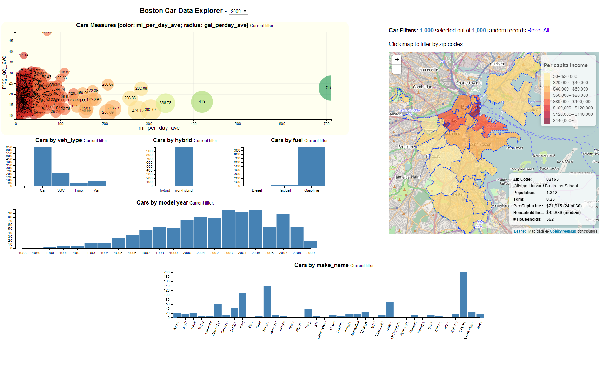

I particpated in the 2014 37 Billion Mile Data Challege. For this effort I created an interactive data visualization called the Boston Car Data Explorer (1920x1080 version) for our team's submission.
